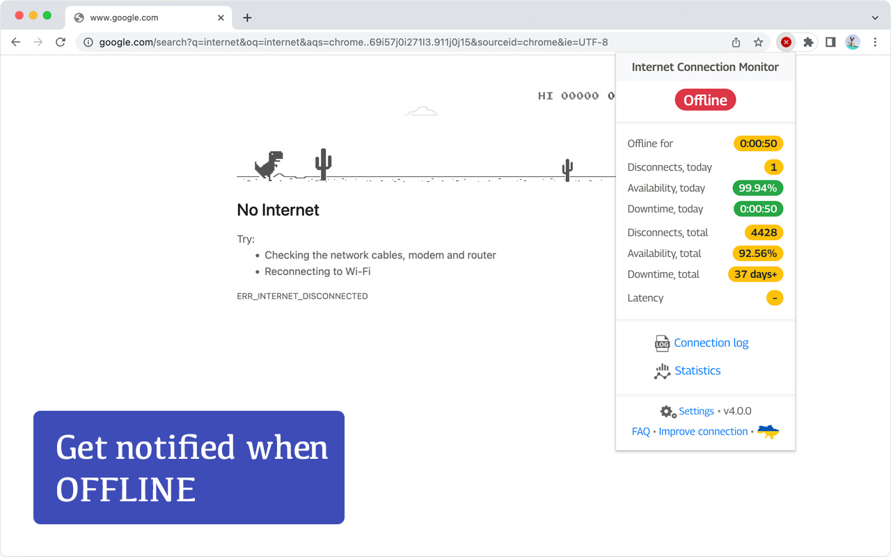
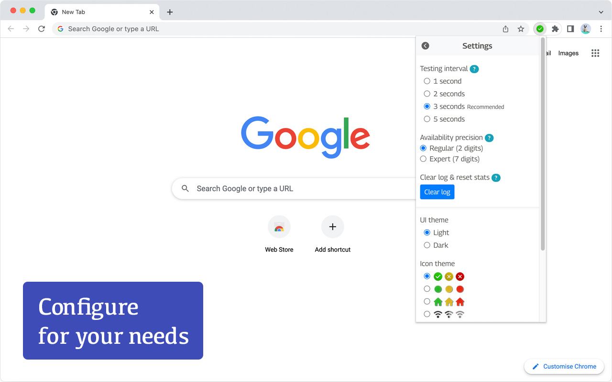

Internet Connection Monitor (ICM)
Google Chrome extension for monitoring Internet connectivity

FEATURES
- Precise connectivity test with configurable testing interval
- Latency measurement
- Detect when Internet doesn't work over operating Wi-Fi or Ethernet
- Play sound when connection goes online or offline
- Access and export events log
- Availability stats
- Retina-ready icon sets
- Light and dark themes support
- RAM-friendly
NEW IN ICM v3.6
- Several important bug fixes
- The extension became faster
SCREENSHOTS




FAQ
Q: Where is the extension icon?A: At some point Google Chrome changed the way extensions are displayed. You need to click on the puzzle icon to the right of the address bar and then pin Internet Connection Monitor

Q: What exactly can be monitored?
A: The extension monitors the Internet connection and reports 3 statuses:
- Online: Internet connected
- Connection issues: ICM uses different mechanics to determine whether internet connection is up and running. If Chrome itself cannot properly determine whether Internet connection is down while you're connected to Wi-Fi/Ethernet - this status will popup. It tells you that most likely your Wi-Fi/Ethernet cable is connected, but there is no Internet connection after it. Most likely, it is a provider issue
- Offline: Internet disconnected. Wi-Fi/Ethernet may work or not, but Internet itself is unavailable
A: The extension uses a combination of Chrome internal API and pinging Google servers via https (port 443). It does not expose any open ports or something else that could compromise user's security
Q: What is the testing interval?
A: How frequently to ping Google servers to determine the status of Internet connection. The option is configurable: check very 1, 2, 3 or 5 seconds
Q: Does this extension have access to my browsing history, etc?
A: It does NOT. Moreover, it does not require any special access at all (you can notice that other extensions ask you to give them some permissions during the installation process)
Q: Can this extension measure Internet speed?
A: It cannot. Please, use Speedtest by Ookla
Q: Will it work if Chrome is closed?
A: Not, it will not. You need to have a Chrome window open to track your connection log. It's relatively easy to add Chrome to autostart on Windows, Mac or Linux
Q: Can you use it on Microsoft EDGE?
A: Yes, you can
Q: Is there a Firefox extension?
A: Currently, only Google Chrome and Microsoft Edge are supported
Icons by flaticon.com
Privacy Policy
ICM Privacy PolicySupport
For support, questions and suggestions, open extension's page in Chrome store and then click on the Support tab.If you're comfortable with GitHub, go straight to ICM issues page on GitHub and ask a question or make a feature request there.
Made with ‚ù§Ô∏è in üá∫üá¶
© Dmytro Shcherbyna 2014-2022
© Dmytro Shcherbyna 2014-2022